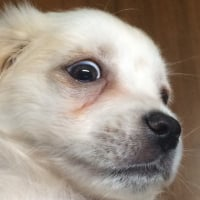
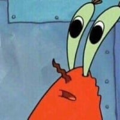
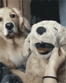

누군가 자기를 쓰다듬어주는 주는 경험을 처음 해보는 강아지.gif
댓글
이거 왜케 웃기냐 ㅋㅋ
개좋아..
인간이 가진 무기 중에 손길도 포함되어 있는거 같아
ㄹㅇ 동물들 보면 간식 좋아하는 애들도 많긴 한데
간식 필요없으니까 쓰다듬어 달라는 애들도 못지않게 많더라
너두 좋아하자나 ><
약간 다른 동물 호르몬 기관 해킹하는 느낌임

이기모꼬??
고양이랑 같이 키운 거 아님?
못생겨서 놀란줄
니케 눈치 콘")



물범 아니냐
아 뭐지..
눈 크케 뜨고 놀란 흑인짤 생각나는데 뭐였지..
팔콘 닮은거?

띠요옹